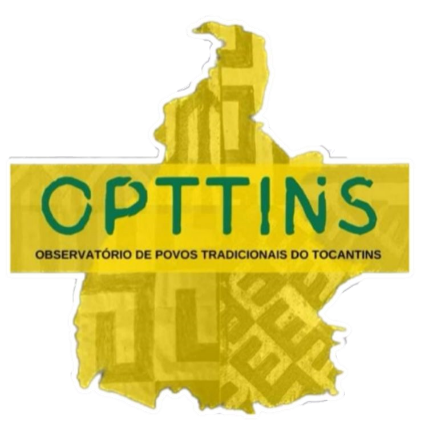
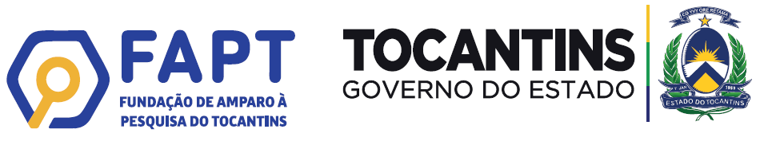
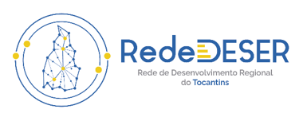
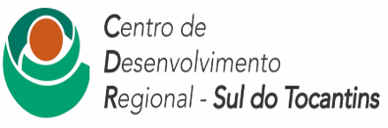

Versão online do teclado fruto da pesquisa Teclado Iny Rybè: solução tecnológica para preservação da língua e cultura do povo Javaé aprovada no EDITAL N. 02/2024 FAPT/SEPLAN – Projeto REDE DESER, como parte da carteira de projetos do Centro De Desenvolvimento Regional (CDR SUL), desenvolvida na Universidade de Gurupi (UnirG), vinculada aos grupos de pesquisa Observatório dos Povos Tradicionais do Tocantins (OPTTINS) e Processos Educativos, com apoio financeiro da Fundação de Amparo à Pesquisa do Tocantins (FAPT).
|  |  |  |  |
|---|